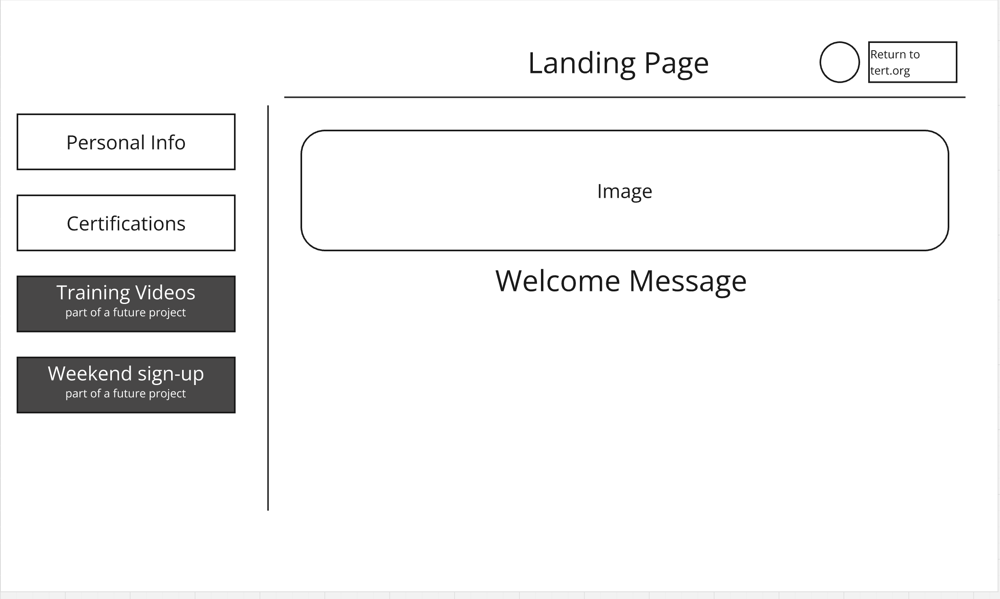
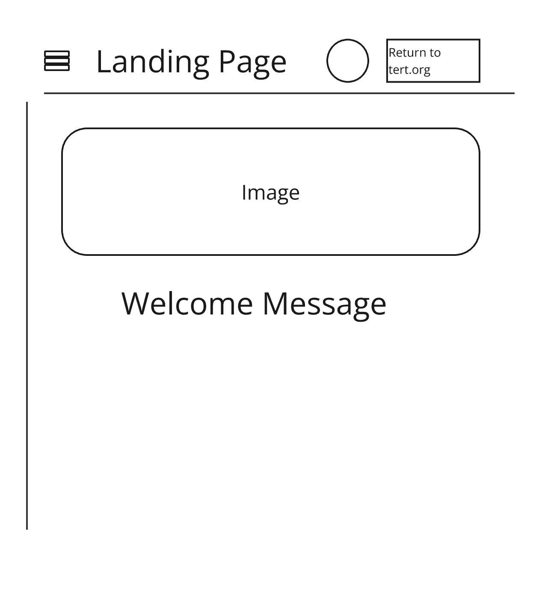
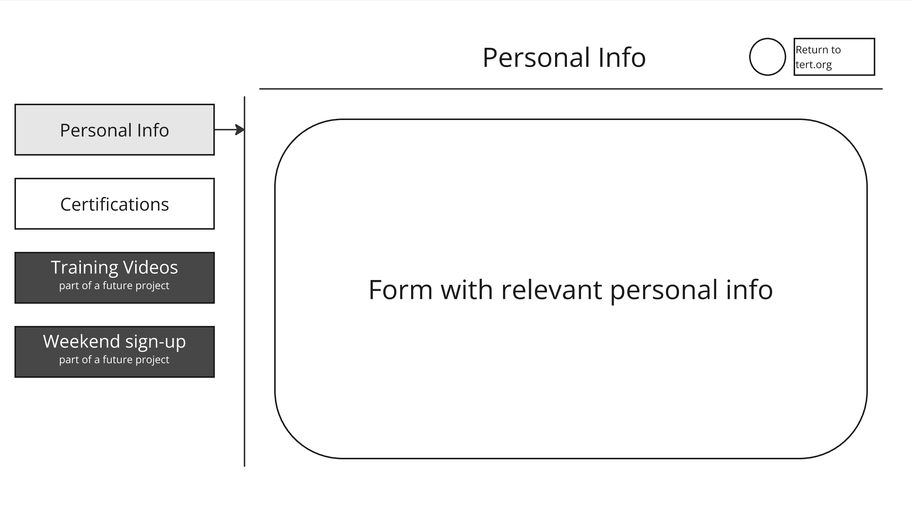
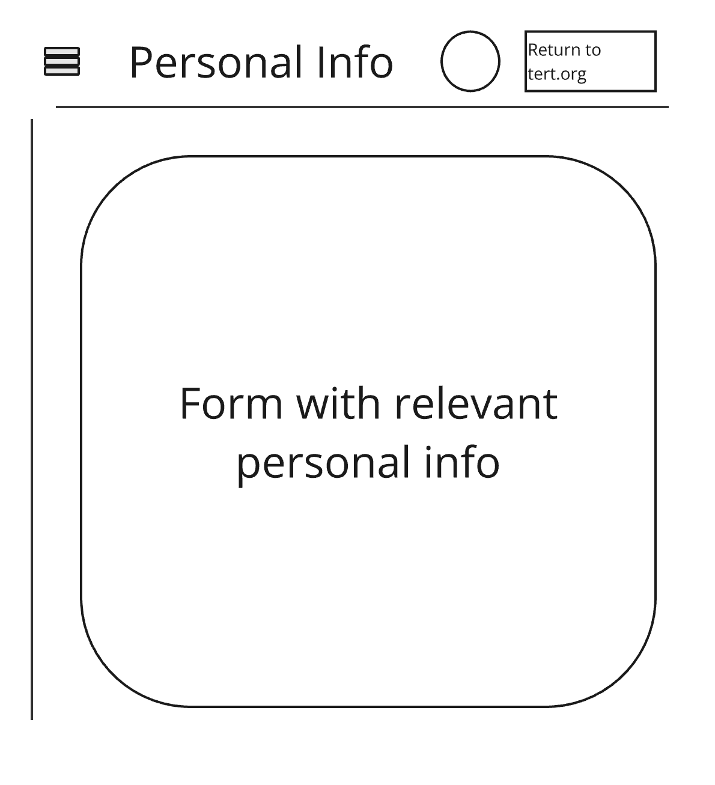
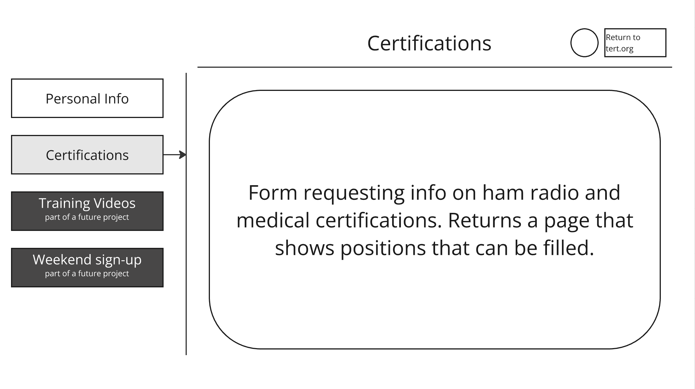
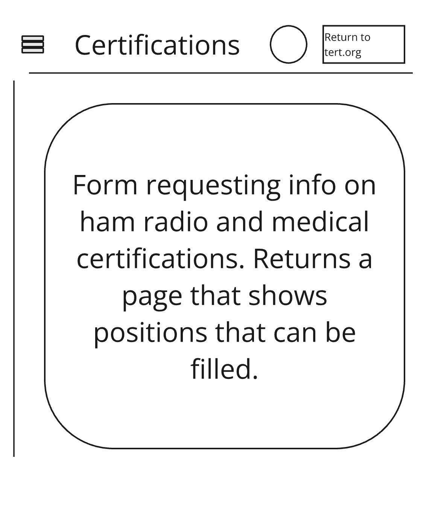

Site Purpose
TERT acts as an assistance to SAR (Search and Rescue) on Mount Timpanogos. Timpanogos sees exceptionally heavy hiker traffic at multiple points on the mountain. A number of fatalities resulted in volunteers working together to help provide quick assistance to hikers. This is a start to a probposed backend where members can update information. That is most of the scope of this project, though future projects will expand and include training videos, signups for weekends, and more.
Scenarios
- Landing page
- How can we track important info on team members? Update Personal Info Page - Helps us collect information relevant to each member, including basic contact information, and an emergency contact.
- How can we see who is qualified for teampositions on the mountain? Update Certifications - The team required each member to have CPR certification. Additionall medical certificaitons qualify team members for a more advanced medical position. And a HAM radio certifcation qualifies members for a communications position.
- -- SUBMIT shows a page with allowed positions based on experience.
Color Schema
Header and Footer:
- rgb(40,116,252) - Blue Background matched to TERT site
- #ffffff - White text
- #fcb900 - Amber
Body:
- #ffffff - White background
- #152750 - Dark blue text
- #fcb900 - Amber
Other elements:
- #fcb900 - Amber for buttons
- #152750 - Dark Blue for mouse over buttons
Typography
- Inter
- Gupter
Wireframes





